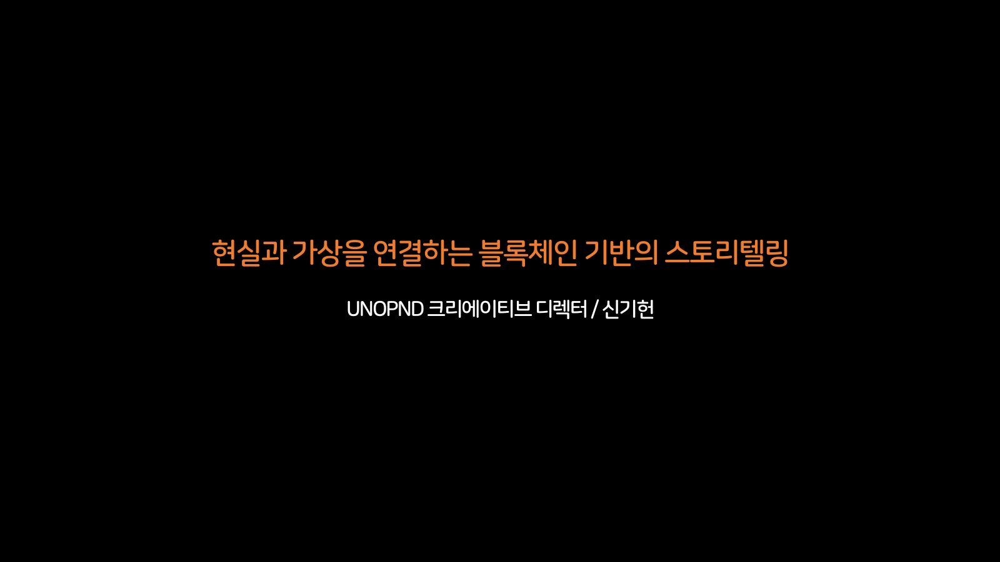

현실과 가상을 연결하는 블록체인 기반의 스토리텔링
2023년 11월의 발표 자료다. 루브르 피라미드를 덮은 사진에서 출발해 도시를 하나의 테마파크로 다시 보고, 스토리텔링과 매직서클이라는 비기술적 요소를 거쳐 블록체인이라는 기술적 요소로 내려간다. 마지막 절은 온체인 스토리텔링을 다섯 가지 도구로 나누어 실제 캐릭터와 작업물로 보여준다.

발표 중에는 장표 위에서 영상이 재생됐다. 원본 파일에 적힌 도형 좌표를 그대로 읽어, 그날 화면에서 영상이 놓였던 자리에 같은 크기로 얹었다. 다른 곳에서 만든 영상은 옮겨 싣지 않아 장표만 남은 자리가 있다. 장표를 누르면 그 자리에서 슬라이드쇼가 열린다.
CHAPTER 01 · 슬라이드 2–12
현실 위에 덧입혀진 이미지와 도시
루브르 피라미드를 흑백 사진으로 덮은 작업을 여러 시점으로 나누어 읽는 데서 시작한다. 이어 런던의 스튜디오 투어와 디즈니 테마파크를 훑으며 도시를 방문하는 경험이 테마파크와 얼마나 닮았는지 짚고, 도시가 방문객을 기억하고 응대해주는가라는 질문으로 넘어간다.
루브르 피라미드를 덮은 사진
- 002 루브르 광장을 정면에서 잡은 사진인데, 유리 피라미드가 서 있어야 할 자리가 그 뒤 궁전 파사드의 흑백 이미지로 채워져 피라미드가 사라진 것처럼 보인다. 왼쪽 위 캡션은 JR au Louver & Le Secret de la Grande Pyramide다. 발표자는 이곳이 파리 루브르이고 가운데 삼각형만 결이 다르게, 어떤 시간성이 느껴지게 보인다고 짚는다.
- 003 같은 작업을 높은 곳에서 비스듬히 잡은 장면이다. 광장 바닥이 채석장을 찍은 흑백 사진으로 덮여 피라미드가 거대한 구덩이 위에 놓인 것처럼 보이고, 그 위를 관람객이 걸어다닌다. 크레인으로 인쇄물을 끌어올려 붙이는 설치 장면 두 컷이 모서리에 겹쳐 있다. 발표자는 JR이라는 아티스트가 상징적인 조형물과 주변 광장을 과거의 시간과 현재의 시간이 중첩되는 장소로 전환시킨 작업이라고 설명한다.
- 004 설치 전체를 수직으로 내려다본 전경이다. 작업복 차림으로 종이를 빗자루로 쓸어 붙이는 인부, 휴대폰을 들어올린 채 몰려든 관람객, 조형물 앞에서 막대를 들고 균형을 잡는 사람의 사진이 함께 얹혀 있다. 발표자는 사람들이 그 앞에서 몰입감 있는 경험을 하게 된다고 하면서도, 물리 세계 위에 구현된 스토리텔링은 시간이 지나면 낡아 망가지고 날씨의 영향을 크게 받는다는 한계를 함께 말한다.
- 005 여섯 개의 원형 주석이 광장 사진 위에 흩어져 있다. 가상의 이미지가 시작되는 지점, 벗겨져 현실의 표면이 드러난 지점, 심하게 왜곡되어 보이는 지점, 현실의 조형물과 여러 각도에서 만나는 지점, 조형물 내부에서 밖으로 나오면서 바라보는 시점, 투명한 경계면에 서 있는 사람들의 감정을 각각 가리킨다. 발표자는 이런 조형을 어느 시점에서 바라보느냐에 따라 완전하게 보이기도 하고 그렇지 않기도 하다고 덧붙인다.
002
003
004
005
도시가 하나의 거대한 테마파크라면
- 006 성 앞에 월트 디즈니와 미키마우스 동상이 선 파크 전경 위에 '도시가 하나의 거대한 테마파크라면?'이라는 질문이 얹혔다. 긴 노출 탓에 관람객은 흐릿하게 번져 있다. 발표자는 여러 테마파크 프로젝트에 참여해오면서 테마파크를 방문하는 일과 어떤 도시에 기대를 품고 찾아가는 일이 생각보다 비슷하다고 느꼈다며, 공간과 경계가 있고 그 안에 콘텐츠와 체험 요소, 서비스, 편의, 보상이 놓이며, 그것을 최종적으로 전달하는 것은 사람이라고 정리한다.
- 007 런던 Warner Bros. Studio에 놓인 호그와트 특급이다. 차번 5972를 단 검붉은 기관차가 증기를 뿜고, 아치형 지붕 아래 보라색 조명이 깔린 승강장을 관람객이 지나간다. 영화 안에서만 보던 장소를 관람객이 실제 공간으로 걸어 통과하게 만든 구성이다.
- 008 완성된 연출과 그 뒤편을 나란히 놓았다. 왼쪽은 승강장에 트렁크와 새장이 쌓인 붉은 객차 외부이고, 오른쪽은 창밖에 초록 스크린을 세우고 조명과 카메라를 둘러 배치한 촬영 세트 내부다. 발표자는 해리포터 세계관에서 호그와트로 향하는 그 열차를 들며, 이곳에서 실제로 올라타 보면 영화 속 장면 안에 직접 존재해 보는 경험을 하게 된다고 설명한다.
- 009 지팡이를 뻗은 두 아이가 나란히 서 있다. 앞의 아이는 니트 차림이고, 뒤의 아이만 검은 망토에 붉은 줄무늬 목도리를 둘렀다. 옆으로는 거울과 세로 스크린이 나란히 선 방에서 아이들이 각자 지팡이를 휘두르는 컷, 그 화면 안에서 동작을 시범 보이는 사람의 컷이 이어진다. 발표자는 스크린 안의 마법사를 보기만 하다가 마법 훈련을 받으면서 성장한 마법사로 자라나는 경험으로 이어진다고 짚는다.
- 010 미키마우스 얼굴 모양으로 창을 뚫은 흰 열차가 승강장에 서 있고, 객실 손잡이도 같은 형상이다. 오른쪽 위 노선도에는 란타우섬을 지나 서니베이에서 갈라지는 디즈니랜드 리조트역이 표시되어 있다. 발표자는 일상적으로 타는 지하철 같은 교통수단도 디즈니랜드에 가면 이런 모습으로 탑승하게 된다며, 파크의 경험이 도시의 교통까지 이어진 사례로 든다.
- 011 미키 귀를 얹은 급수탑에 WALT DISNEY STUDIOS가 적혀 있고, 그 옆에는 마법사 차림의 미키가 별 지팡이를 치켜든 채 TOON STUDIO 간판 위에 올라서 있다. 발표자는 파리에 가면 디즈니랜드 옆에 영화가 만들어진 배경과 뒷얘기를 들여다보는 파크가 따로 있다고 소개하며, 앞서 든 사례들을 미키라는 하나의 캐릭터로 묶는다.
- 012 성을 향해 치켜든 스마트폰 화면 위로 '우리가 방문한 도시를 경험하고 기억하는 것'과 '도시가 우리에 대해 기억하고 응대해주는 것'이 밑줄 그은 두 줄로 겹쳐 놓인다. 발표자는 여러 파크를 돌며 쌓은 경험이 자기 머릿속에만 남아 흩어졌을 뿐, 그 도시가 자신을 기억해 이름을 불러주는 경험은 끝내 갖지 못했다고 짚는다.
006
007
008
009
010
011
012
CHAPTER 02 · 슬라이드 13–21
디지털이 잇는 방문객의 여정
앱과 웨어러블, 가상 대기열, 공간 속 디지털 액세스 포인트로 방문 전후를 하나로 잇는 사례를 모았다. 뒤이어 방문객의 경험 여정을 도식으로 펼쳐, 분절된 영역 사이를 잇는 브리지와 재방문 순환을 단계별로 쌓아 보여준다.
앱과 웨어러블이 잇는 파크 경험
- 013 미키 실루엣이 파인 금색 리더기 앞으로 손에 쥔 스마트폰이 다가가고, 그 오른쪽에 앱 화면 세 개가 겹쳐 선다. QR이 실린 가족 티켓, 대기 5분에 도보 10분이라고 표시된 어트랙션 지도, 디저트 주문 메뉴다. 모바일 앱과 웨어러블로 집과 테마파크, 호텔, 크루즈를 잇고 일정과 예약, 대기, 주문, 사진 수령을 데이터로 묶는다고 아래에 적어두었다.
- 014 스톰트루퍼 대열을 배경으로 앱 카드 두 장이 놓인다. 왼쪽은 오전 7시와 정오에 스타워즈: 라이즈 오브 더 레지스탕스의 가상 대기열을 신청하라는 안내이고, 오른쪽은 보딩 그룹 30번에 오후 2시 55분까지 오라는 호출 화면이다. 휴장 기간에 다져둔 디지털 인프라 덕에 재개장 뒤 어트랙션과 식음료, 객실 이용 지표가 대폭 올랐다고 정리해두었다.
- 015 골목 벽면의 장치를 향해 아이가 스마트폰을 뻗고, 뒤에 선 어른이 그 모습을 본다. 옆에 붙은 앱 화면은 소속과 평판 수치가 매겨진 프로필, 노란 지도, 외계 문자 자판이 깔린 번역기다. 발표자는 몰입감 있게 만들어진 공간에 디지털 액세스 포인트를 여러 개 심어두면, 태깅 한 번으로 캐릭터가 되어 미션을 받고 모험하듯 움직이게 된다고 설명한다.
- 016 하루 일정을 짜는 웹페이지에 FastPass+ 선택과 식당 예약, 공연 시각이 아이콘으로 걸려 있고, 그 위로 미키와 함께 찍힌 사진을 내려받는 포토패스 화면이 겹친다. 방문객 개개인을 알아보고 맞춤으로 응대하되 기술은 철저히 숨겨지고 스토리만 노출된다는 조건이 아래에 붙는다. 발표자는 생일을 알아본 미키가 다가와 축하 선물을 건네던 순간을 예로 들며, 그 아래에서 보이지 않는 디지털 레이어가 작동한다고 덧붙인다.
013
014
015
016
방문객의 디지털 경험 여정
- 017 랜드마크와 메인 쇼를 한가운데 파란 상자로 놓고, 그 둘레를 커머스와 어트랙션, 서비스, 이벤트 네 구역이 점선으로 둘러싼다. 각 구역에는 같은 이름의 칸 하나만 파랑으로 켜져 있고, 나머지 칸과 좌우의 방문 전후 열은 회색으로 비어 있다. 어떤 도시를 찾든 첫 번째가 되는 곳은 랜드마크나 메인 쇼이고 그 주변 시설들은 흩어져 분절되어 있다는 것이 발표자의 진단이다.
- 018 같은 도식에 확장 영역이 회색 파랑으로 얹힌다. 커머스 구역 안에도 어트랙션과 서비스, 이벤트 칸이 함께 들어차고, 비어 있던 방문 전후 열은 웹사이트와 SNS, 모바일 앱, 이벤트 쿠폰, 지도와 경로, 예약, 교통, 팝업스토어, 커뮤니티로 채워진다. 커머스 옆에 어트랙션이 있고 서비스가 있고 이벤트도 있다는 예를 들며, 발표자는 여기에 시간을 더하면 머무는 동안뿐 아니라 그 이전과 이후의 경험까지 시야에 들어온다고 말한다.
- 019 노란 브리지가 층층이 얹힌다. 네 구역 안쪽마다 가로로 한 줄, 구역과 구역 사이에 네 개, 방문 전과 현장 사이 그리고 현장과 방문 후 사이에는 세로로 긴 기둥이 선다. 각각 잘 만들어진 시설과 서비스, 콘텐츠에도 유효한 경험이 되지 못한 채 휘발되는 자리가 남는다는 것, 그 비어 있는 곳을 무엇으로 이을 것인가에 관심이 많다는 것이 발표자가 이 그림에 붙인 말이다.
- 020 세로축을 Digital과 Physical로 세우고, 점선으로 잘라낸 현장 구간에서만 위아래 두 막대를 노랗게 켠다. 두 층 사이에는 Visitor's hidden needs와 Visitor's Unmet Needs가 위아래로 적히고, 가로로 뻗은 화살표 끝에 Player가 놓인다. 발표자는 겪고 있는 어려움을 푸는 데서 나아가 스스로 무엇이 필요했는지 깨닫게 하는 히든 니즈까지, 디지털 레이어가 맡을 수 있다고 정리한다.
- 021 현장 구간만 노랑으로 남고 방문 전후에 파란색 Extended Digital Experience가 붙는다. 양 끝의 점선 화살표가 재방문 순환의 들고 남을 표시하고, 전체를 감싼 괄호에 Web3 Experience with Blockchain이 걸린다. 아래 축은 Visitor에서 Player를 거쳐 True Player로 간다. 발표자는 앞뒤 단계를 이어 재방문과 재구매로 돌아오는 선순환에 디지털 레이어를 써야 한다고 짚는다.
017
018
019
020
021
CHAPTER 03 · 슬라이드 22–26
스토리텔링과 매직서클
디지털 경험을 강화하는 비기술적 요소로 스토리텔링과 매직서클을 든다. 같은 장소 위에 여러 IP가 얹히는 위치 기반 플랫폼과 랜드마크를 덮는 AR 렌즈를 예로 들고, 디지털 경험이 퍼진 뒤 매직서클의 영역이 어떻게 넓어지는지 두 개의 원 그림으로 대조한다.
POI와 AR 렌즈, 그리고 매직서클
- 023 스마트폰 세 대에 담긴 거리 AR 화면 옆으로 Niantic Real World Platform 구성도가 놓인다. GAMEPLAY와 SOCIAL, MAPPING, ADV. AR 모듈 위에 잉그레스, 포켓몬 GO, 해리포터 위저즈 유나이트가 층층이 얹히고 우하단에 lightship.dev 주소가 붙었다. 발표자는 현실의 장소를 POI라는 형식으로 정의해 두면 한 번 만들어진 그것이 여러 IP로 전환되어 반복해서 쓰인다고 설명한다.
- 024 게임 장면 열두 컷이 넉 장씩 세 줄로 늘어선다. 공원의 라프라스와 피카츄, 도심을 덮치는 몬스터헌터의 대형 몬스터, 잔디밭의 피크민, 지구본 위에 놓인 NBA 코트가 한 판에 섞인다. 발표자는 같은 장소가 게임마다 다른 의미와 다른 가치, 다른 기능을 갖는다고 짚으며 하나의 장소 위에 얹히는 디지털 레이어는 무한히 늘어나고 중첩될 수 있다는 뜻이라고 정리한다.
- 025 워싱턴 국회의사당과 에펠탑, 궁전 정문 위로 무지개빛 형상이 흘러내리는 스냅챗 로컬 렌즈 화면 셋을 왼쪽에 세우고, 오른쪽에는 상점 외벽에 AR 물감을 뿌리는 사람들을 붙였다. 렌즈 스튜디오 출시 후 수백만 개 이상의 렌즈가 제작되었고 일일 활성 사용자 중 3/4 이상이 매일 AR 렌즈를 쓴다고 적었다. 발표자는 먼저 다녀간 사람이 파사드에 남긴 낙서를 나중에 온 사람이 보면서 시간 차이를 넘어 연결된다고 덧붙인다.
- 026 왼쪽 원에서는 매직서클이 가상세계 안쪽에 작게 갇혀 있고 인식의 지점이 그 경계에 붙어 있다. 오른쪽에서는 점선이 현실세계와 가상세계를 함께 감싸도록 넓어지고 인식의 지점도 바깥 테두리로 물러난다. 발표자는 어른보다 아이들이 그 경계를 훨씬 자유롭게 넘나든다고 말하며, 디지털 영역으로 넘어가면 매직서클의 범위가 더 넓어진다고 본다.
023
024
025
026
CHAPTER 04 · 슬라이드 27–40
블록체인과 경험의 상속
여러 도시를 다니며 잡은 포켓몬과 세대를 잇는 데이터 연동을 경험의 상속이라는 말로 묶는다. 그다음 기존 플랫폼이 할 수 없는 일을 한 줄로 던지고, 상호작용성과 동기성 좌표에 영속성과 불변성 축을 덧붙여 온체인화를 정의한다.
도시마다 잡은 포켓몬
- 028 구름 낀 도시 하늘 위로 레쿠쟈와 디아루가 같은 전설의 포켓몬이 떠 있고, 아래 주택가와 빌딩 사이에 빨강과 파랑, 노랑의 체육관이 솟아 있다. 체육관마다 남은 시간이 0:22:43으로 똑같이 걸려 있다. 상단에는 나이앤틱과 포켓몬 컴퍼니가 함께 여는 Pokémon GO Fest 2021 로고가 놓여, 현실의 도시가 그대로 게임판이 된 상태를 보여준다.
- 029 같은 소니 휴대폰을 쥔 손이 다섯 장의 사진에 똑같이 등장한다. 부제는 Pokemon Go Tour, 홍콩과 런던, 파리, 상하이를 묶었다. 빅토리아 항 스카이라인 앞의 Krabby CP57, 꽃밭 위의 Staryu CP173, 정원 울타리 앞의 Clefairy CP175가 그 도시들의 실제 풍경과 함께 찍혔다. 발표자는 가는 장소마다 포켓몬을 잡고 진화시켰고, 그 이야기를 스스로 만들어 SNS로 나눴다고 회상한다.
- 030 세 개의 앱 화면을 나란히 붙인 녹화 영상이 재생된다. 왼쪽에서 CP231 Dratini가 CP463 Dragonair가 되고, 오른쪽에서는 CP519 Dragonair가 빛이 터지며 CP1165 Dragonite로 바뀐다. 양쪽 모두 Registered to Pokédex 자막이 뜨고, 가운데 버디 화면에 함께 걸은 거리가 476.7km로 찍혀 있다. 발표자는 같은 포켓몬이 아무리 많아도 476km를 함께 걸어준 이 하나는 특별하다고 말한다.
- 031 마스크를 쓴 아이가 손바닥 위 포켓몬 고 화면을 들여다보는 장면, 유리 외벽 고층 빌딩 사이 광장에 쭈그려 앉아 화면을 겨누는 장면, 그 빌딩 위 하늘에 Dragonite가 떠 있는 AR 화면을 세로 사진 석 장으로 이어 붙였다. 발표자는 이 계정을 다음 세대에 물려주었고, 지금은 물려받은 쪽이 자신보다 더 열심히 한다고 말한다.
- 032 포켓몬 센터 시부야가 SPONSORED 표시를 단 지점으로 뜨고, 빗속 지도에는 레이드가 0:53:45부터 0:33:06까지 남은 시간을 각각 달고 흩어져 있다. 도쿄 디즈니랜드의 파트너스 동상과 디즈니랜드 역도 실제 사진이 박힌 지점으로 등록되어, 찾아간 장소들이 그대로 게임 안의 좌표가 되어 있다.
- 033 JR선과 이노카시라선 안내판이 걸린 승강장, 주택가 골목의 담장 앞, 역 매표기 옆에서 각각 다른 포켓몬을 마주친 순간이다. 뒤의 두 장에서는 아이가 화면 속 포켓몬 옆에 자세를 잡거나 손을 뻗고 있어, 특별할 것 없는 동선 위에서도 멈춰 선 자리마다 기록이 남는다는 점이 드러난다.
- 034 바위 동굴 입구에서 팔을 벌린 포켓몬 옆에 아이가 바짝 붙어 서 있다. 앞뒤로는 POOH'S HUNNY HUNT 간판 아래, 수련잎이 뜬 연못, 우거진 나무 사이, 돌무더기 위에서 찍은 사진이 붙어, 같은 놀이공원 안에서도 자리를 옮길 때마다 마주치는 포켓몬이 달라진다. 발표자는 자신이 그랬듯 도쿄의 포켓몬 센터나 디즈니랜드를 찾아가 아끼며 키운 포켓몬과 함께하는 여정이 다음 세대에서도 이어진다고 설명한다.
028
029
030영상 1
031
032
033
034
세대를 잇는 데이터와 그 한계
- 035 가운데 놓인 포켓몬 홈은 레전드 아르세우스, 소드·실드, 브릴리언트 다이아몬드·샤이닝 펄과 양방향 화살표로 이어지고, 포켓몬 뱅크와 포켓몬 고, 레츠고 피카츄·이브이는 한 방향으로만 들어온다. 오른쪽에는 200칸 보관함에서 개체를 옮기고 기술을 다시 배우게 하는 앱 화면과 home.pokemon.com 주소가 있다. 발표자는 1996년에 시작한 이 IP가 세대가 다른 타이틀 사이에서 캐릭터를 보관하고 전송하는 이력 시스템을 갖췄다고 짚는다.
- 036 포켓몬 고에서 찍은 사진을 엽서로 보내면 스칼렛·바이올렛 쪽에 무늬가 다른 Vivillon이 나타나고, 엽서를 여러 번 보내 모은 Coin Bag과 Golden Lure Module을 쓰면 Roaming Form Gimmighoul이 등장한다. 연동 개시를 알리던 공식 안내 이미지를 그대로 옮겨 붙였고, 발표자는 이 전송 과정에서만 얻을 수 있는 보상이 따로 있다고 덧붙인다.
- 037 검은 화면 한가운데 '그럼에도 닌텐도, 디즈니가 할 수 없는 일들'이라는 흰 글씨 한 줄만 놓인다. 발표자는 앞서 들려준 계정 양도가 실은 약관 위반이었고, 적발되어 계정이 정지되면 그동안 모은 포켓몬을 전부 잃는다고 밝힌다. 완벽한 소유라는 개념이 이들의 플랫폼에는 존재하지 않는다는 깨달음이 다음 구간으로 넘어가는 문턱이 된다.
035
036
037
온체인화 좌표
- 038 가로축은 비동기성에서 동기성으로, 세로축은 비상호작용성에서 상호작용성으로 뻗는다. 왼쪽 아래 Content Format A에서 오른쪽 위 Content Format B로 굵은 화살표가 올라가며 콘텐츠가 즉각 반응하고 동시에 일어나는 형태로 옮겨온 경로를 표시한다. 발표자는 그 두 속성이 좋은 성질이면서도 디지털 콘텐츠를 휘발적으로 만들었다고 설명한다.
- 039 같은 좌표 오른쪽으로 점선이 뻗어 나가 노란 상자 온체인화(On-chainization)에 닿고, 거기서 다시 점선 화살표가 사분면 바깥의 Content Format B (On-chainized)로 이어진다. 상호작용성과 동기성을 이미 얻은 콘텐츠에 한 번의 처리를 더 거는 단계로, 축 안에서의 이동이 아니라 축 바깥으로 나가는 전환이라는 점이 배치로 드러난다.
- 040 오른쪽에 두 번째 사분면이 세워진다. 세로축은 휘발성에서 영속성으로, 가로축은 가변성에서 불변성으로 향하고, 온체인화된 Content Format B가 왼쪽 아래에서 굵은 화살표를 타고 오른쪽 위 Content Format C로 올라간다. 발표자는 특정 조직의 서버 안에 있을 때 휘발되던 것들이 온체인화를 거치며 영속성과 불변성이 더해진 새로운 형태의 콘텐츠가 되어간다고 정리한다.
038
039
040
CHAPTER 05 · 슬라이드 41–50
온체인 스토리텔링의 정의와 첫 두 도구
에셋 판매나 리워드 제공에 머물지 않고 스토리텔링의 도구가 되는 블록체인을 온체인 스토리텔링으로 정의한다. 이어 캐릭터 Keira를 통해 시네마틱 영상과 토큰 바운드 어카운트를 소개하고, 캐릭터가 방과 소지품과 자산을 직접 소유하는 구조를 계층도로 보여준다.
온체인 스토리텔링의 정의
- 042 제목 아래 네 줄이 한 문장으로 이어진다. 앞의 두 줄은 기술로서의 블록체인에만 머무르는 것도, 에셋 판매와 리워드 제공에만 초점을 두는 것도 아니라며 아닌 쪽을 걷어내고, 뒤의 두 줄은 새로운 스토리텔링의 도구 역할을 하면서 사람들의 언맷 니즈와 히든 니즈를 해소해주는 것이라고 채운다. 네 줄이 함께 걸리는 자리에 밑줄 친 현실과 가상을 연결하는 블록체인 기반의 스토리텔링이 놓이는데, 발표 제목 그대로다.
- 043 도시 스카이라인이 걸린 창 아래 잠든 Keira에서 영상이 시작해 화면 전체를 채운다. 무기 캐비닛을 열어 금색 리볼버를 집는 장면을 지나, 주사선이 깔린 마켓플레이스 화면에 Valhalla #7030과 #3848의 최근 판매가가 스치고, PFP 섬네일과 보유자 계정을 늘어놓은 CAST 크레딧이 올라간다. 발표자는 PFP가 가격이 오르는 거래 대상에 머무르지 않고 함께 살아가는 세상에 태어난 캐릭터로 발전할 수 있다고 본다.
042
043영상 1
도구 1. Cinematic
- 044 온체인 스토리텔링을 위한 도구의 첫 번째는 Cinematic이다. Keira #7030의 트위터 계정 @valhalla7030이 열려 있고, 소개란에 'No Beer, No Life'와 MIXtown의 첫 주민이라는 문구, 2023년 5월 가입이 적혀 있다. 배너 속 책상 위 사각 장치에는 세계관 내 공간 이동 장치라는 주석이 달렸고, 오른쪽에는 같은 인물의 2D 일러스트와 3D 렌더가 양방향 화살표로 이어진다.
- 045 네 컷과 영어 내레이션이 Keira의 아침을 순서대로 잇는다. 마지막 알람에 깨어 한 손으로 양치하며 한 발로 양말을 신고, 등판에 Valhalla가 새겨진 가죽 재킷을 걸치고, 무기 캐비닛에서 금색 리볼버를 꺼낸다. 책상 앞 Portal이 사진을 찍듯 빛을 터뜨리자 주변이 녹아내리고 그는 온체인 위 일터에 도착한다. 마지막 자막은 #7030 Ready다.
- 046 청회색 배경에 선글라스, 삼각 펜던트를 단 은목걸이, VALHALLA가 붉게 적힌 가죽 재킷, 금색 리볼버가 제품 촬영처럼 한 줄로 놓인다. 영상 속 소품을 실제 자산으로 되짚는 자리다. 맨 위에 Lv.2 Valhalla #7030의 컨트랙트 주소와 Etherscan 링크가 붙고, 빈티지 선글라스와 바이크 가죽 재킷, 샤이닝 골드 리볼버 세 점만 Lv.3으로 tokenbound.org·OpenSea 주소를 달았다.
044
045
046
도구 2. TBA
- 047 두 번째 도구는 TBA(Token Bound Accounts)다. ERC 6551 도해는 Moonbirds #6551 아래에 NFT 두 개를 매달았고, 오른쪽 Sapienz 볼트 사례는 그 지갑이 일반 이더리움 지갑처럼 0.42 ETH까지 담는 것을 보여준다. 발표자는 ERC-721 기반 NFT를 스마트 컨트랙트 월렛으로 전환하는 기술이라 설명하고, 그러면 캐릭터가 유니스왑 같은 디파이 애플리케이션에 직접 접속하는 주체처럼 작동한다고 짚는다.
- 048 앞 영상의 구조가 실제 체인 위 계층으로 정리된다. MIXtown EOA 지갑 안에 발할라 타운이 들어가고, 그 안에서 Keira와 Keira's Room이 각각 TBA Lv.1이 된다. 방은 세 조각의 Lv.2로 갈라져 은목걸이와 Mysterious Portal을 품고, 캐릭터 아래로는 선글라스와 리볼버, 재킷, Ethereum과 USDC가 붙는다. 오른쪽 CryptoPunks Town의 Eva에게서 맥주캔 하나가 포탈을 거쳐 건너온다.
- 049 픽셀 캐릭터가 인쇄된 맥주 캔이 놓인 방에서 책상 위 사각 포탈이 색을 바꾸며 켜지는 영상이 이어진다. 다음 장면에서 그 캔은 햇빛 드는 다른 방의 카펫 위에 떨어져 있다. 발표자는 캐릭터가 다른 타운으로 넘어가는 이 순간이 실제 트랜잭션 내역과 일치한다고 보면 된다고 덧붙인다.
- 050 반원 지도 한가운데로 MIXtown이 TBA Lv.1, MIXworld가 Lv.2, MIXuniverse가 Lv.3으로 굵은 화살표를 타고 쌓인다. 아래쪽에서 Valhalla Town과 CryptoPunks Town, Sapienz Town이 초록 포탈 아이콘으로 이어지고, Clone X와 Pudgy Penguins, BAYC는 물음표 하나에 물려 자리만 비어 있다. 바깥 테두리의 노란 IRL 점 세 개가 한국·미국·프랑스의 현실 접점이다.
047
048
049영상 1
050
CHAPTER 06 · 슬라이드 51–62
픽셀 초상에서 Dapp까지
2,400픽셀짜리 이미지 한 장을 계속 확대해 1만 개의 픽셀 초상 안으로 들어간다. 낮과 밤의 인격이 다른 캐릭터 Eva를 세우고, 그 캐릭터가 음원을 내고 외부 생태계에 연결되는 데까지를 구조도와 영상으로 잇는다.
2,400픽셀 안의 1만 개 초상
- 051 punks.png 한 장이 점선 액자 안에 통째로 올라가 있다. 파일은 가로세로 2,400픽셀이고, 멀리서는 잘게 짜인 푸른 격자 무늬로만 읽힌다. 발표자는 이게 무엇인지 알아보겠느냐고 객석에 물은 뒤, 조금씩 확대해 보겠다며 화면을 밀고 들어간다.
- 052 확대가 한 단계 들어가자 푸른 배경을 메운 픽셀 초상들이 형태를 드러낸다. 모자와 머리색, 담배와 안경, 피부톤이 제각기 다른 얼굴이 화면 끝까지 빈틈없이 이어진다. 발표자는 이제 좀 알아보겠느냐고 확인한 뒤 한 번 더 확대하겠다고 예고한다.
- 053 얼굴 하나하나에 붙은 속성이 또렷해질 만큼 화면이 한 번 더 들어왔고, 가장자리의 초상들은 판 바깥으로 잘려 나간다. 발표자는 한 칸이 24 x 24 셀이고 가로 100개 세로 100개가 놓여 전체 1만 개가 된다고 설명한 뒤, 2023년 웹3에서 가장 확실하게 자리잡은 컬렉션이라고 덧붙인다.
- 054 세 번째 도구로 PFP(Profile Picture) NFT를 연다. 회색 모자를 쓰고 파이프를 문 하늘색 얼굴이 카드 한 장으로 세워지고, 아래에 CryptoPunk 7804, 아홉 개뿐인 에일리언 펑크 중 하나라는 문구가 붙었다. 1만 개 중 아홉이라는 희소성이 앞 장의 확대 시퀀스 바로 뒤에 놓인다.
- 055 뉴욕 도로변 옥외광고판 두 칸 중 위는 법률사무소 광고이고 아래는 분홍 바탕에 크립토펑크 두 점이 걸린 화면이다. 오른쪽 위 지도에 설치 지점이 핀으로 흩어져 있고 SaveArtSpace의 Pixelated 전시라는 출처가 적혀 있다. 발표자는 이것을 소유한 사람들이 커뮤니티를 만들고 연대해 현실의 여러 공간을 연결해 전시와 밋업을 열고, 그것을 기반으로 비즈니스를 일으키기도 한다고 설명한다.
- 056 반투명한 푸른 판 위에 픽셀 캐릭터가 전신으로 한 명씩 놓여 표본처럼 늘어선 장면이다. 가운데 한 명만 초록빛 눈매와 노란 상의로 또렷하게 초점이 맞아 있고 나머지는 흐리게 물러나 있다. 왼쪽 아래 The Origin of CryptoPunks in 2017이라는 한 줄이 앞서 확대해 본 1만 개의 출발점을 가리킨다.
051
052
053
054
055
056
도구 3. PFP, 낮과 밤의 두 인격
- 057 Eva #3724의 소셜 계정 화면을 그대로 띄웠다. 계정은 @cryptopunks3724, 소개에는 MIXtown의 두 번째 주민이라 적혀 있고 가입은 2023년 10월이다. 헤더 속 픽셀 방 한가운데 보라색 사각 장치에 세계관 내 공간 이동 장치라는 라벨이 붙었고, 오른쪽에서는 2D 픽셀 얼굴과 3D 얼굴이 Day to Night, Night to Day 화살표로 마주 선다.
- 058 네 컷으로 나뉜 화면에 영문 내레이션이 함께 흐른다. 요가 수업을 마친 Eva가 거울 앞에서 화장을 픽셀 단위로 지우자 같은 종족의 4%만 가진 Clown Eyes Green이 드러나고, 밤이 되면 초록 불꽃을 뿜는 기타를 든 인격이 깨어난다. 진동하던 맥주캔은 포탈로 빨려 들어가고 마지막 칸은 #3724 Ready로 닫힌다. 발표자는 이 캐릭터가 낮과 밤에 서로 다른 인격을 갖는다고 소개한다.
- 059 해 지는 창을 등지고 요가 매트 위에 앉은 픽셀 캐릭터를 실사에 가까운 렌더로 세웠다. 나무 바닥에 매트가 줄지어 깔려 있고 창밖으로 노을 진 산이 보인다. 왼쪽 아래에는 Yoga Teacher 「Eva #3724」라고만 적었다. 발표자의 설명에 따르면 낮의 Eva는 편안한 상태에서 명상을 지도하는 요가 트레이너의 삶을 살아간다.
- 060 밤 골목을 훑던 영상이 무대 조명 아래 일렉트릭 기타를 치는 Eva로 넘어간다. 초록 섬광이 튀는 사이로 픽셀 맥주캔이 다시 나타나고, 낮의 요가 강사와 정반대인 밤의 인격이 움직이는 화면으로 이어진다. 발표자는 밤에는 강렬한 록을 연주하는 뮤지션으로서의 삶을 살아간다고 말한다.
057
058
059
060영상 1
도구 4. Dapp
- 061 웹3 음원 서비스의 아티스트 페이지에 팔로워 392, 민팅 791, 컬렉터 256, 수집 62가 찍혀 있고, 2023년 10월 6일 발매된 LNRZ의 Multichain이 걸려 있다. 아래에는 CryptoPunks NFT에서 뮤지션이라는 캐릭터성 부여, NFT 음원 발매, Lens Protocol 생태계 연동으로 이어지는 경로가 한 줄로 적혀 있다. 발표자는 캐릭터가 스스로 애플리케이션에 접속해 음악을 팔고 수익을 만든다고 설명한다.
- 062 MIXtown EOA 월렛 안에 CryptoPunks Town이 놓이고, TBA 1단계 본체인 Eva(0x0f…D334)가 요가 강사와 록 스타 두 인격으로 갈라져 각각 SBT로 묶인다. 같은 기타 NFT라도 어느 주소로 보내느냐에 따라 복셀이 되거나 실사가 되고, 오른쪽에서는 트랙 NFT 네 개가 앨범 NFT 두 개로 합쳐져 카세트덱에 담기며 티켓 NFT는 신발상자에 모인다. 발표자는 이것이 Eva 캐릭터에 적용한 TBA 기술이라고 짚는다.
061
062
CHAPTER 07 · 슬라이드 63–71
현실로 나온 캐릭터와 온체인 히스토리
캐릭터를 실제 행사장과 전시 공간, 대형 스크린 위에 세운 기록을 모았다. 마지막으로 두 캐릭터를 축으로 새로운 포맷 자리를 비워둔 연구 도식을 펼치고, 온체인 스토리텔링에서 온체인 히스토리로 넘어간다는 문장으로 닫는다.
도구 5. IRL
- 063 다섯 번째 도구 IRL은 2023년 여름 서울에서 열린 블록체인 행사장에 캐릭터를 합성해 넣는 것으로 시작한다. 객석이 들어찬 무대의 대형 LED에 리캡 자막과 픽셀 캐릭터가 나란히 걸리고, 스폰서 로고가 반복된 포토월 앞에 앉은 캐릭터와 행사 표기가 붙은 흰 조형물이 뒤따른다. 발표자는 그 자리에 참석해 블록체인을 공부했다고 밝힌다.
- 064 이 발표가 열린 부산 행사장 자체가 그다음 사례로 놓인다. 붉은 무대 스크린 앞에 청중이 원탁마다 앉은 사진과, Rise Up Together from Busan이라는 문구가 적힌 대형 배너 옆에 두 팔을 든 픽셀 캐릭터를 세운 사진이 겹쳐진다. 발표자는 어제오늘 이 행사에도 참여하고 있다며 발표 당일까지를 사례 안에 넣는다.
- 065 Busan Cinema Center의 야외 객석은 낮이라 텅 비어 있고 광장 쪽으로는 검은 천막이 늘어서 있다. 정면 대형 스크린에는 연보라 머리의 3D 캐릭터 얼굴이 화면 가득 잡혀 있고, 회색 좌석 한가운데에 픽셀 캐릭터가 두 팔을 들고 앉아 그 화면을 올려다본다. 발표자는 그날 오전 이 스크린으로 캐릭터 영상을 상영했다고 전한다.
- 066 사람이 통로까지 들어찬 밋업 대담 사진 옆에, 스탠드형 장치에서 뻗어 나온 초록 빛줄기 앞에 픽셀 캐릭터가 두 손을 모으고 선 합성 사진이 놓인다. 발표자는 여러 웹3 프로젝트와 협업하며 어려운 개념을 커뮤니티가 쉽게 쓰도록 돕고, 팬들이 원하는 것을 이야기로 옮겨 전한다고 설명한다.
- 067 흰 장갑을 낀 손이 CryptoPunks Eva #3724라고 인쇄된 자홍색 상자를 들어 올리고, 1만 개의 픽셀 초상을 한 판에 담은 액자에서 EVA IS HERE 말풍선이 자기 자리를 가리킨다. 옆에는 같은 캐릭터를 단독으로 뽑은 액자와 QR 코드가 찍힌 인증서가 놓인다. Avant Arte가 제작한 CryptoPunks 10,000 On-Chain이라는 실물 판화다.
- 068 Define: Seoul 전시장 복도에 픽셀 캐릭터가 팔짱을 끼고 서 있고, 옆으로 YOUR BEAUTIFUL FUTURE라고 적힌 그라데이션 회화가 걸려 있다. 붉은 띠에 매달린 바위 조각 아래에 앉은 장면과 벽화 속 인물 곁에서 휴대폰을 들어 사진을 찍는 장면이 뒤따른다. 발표자는 한 달 전 열린 아트페어에 참여해 미술과의 접점을 만든 자리라고 소개한다.
063
064
065
066
067
068
빈 슬롯과 온체인 히스토리
- 069 두 캐릭터를 좌우 축으로 세우고 지금까지의 포맷을 실선으로, 아직 없는 포맷을 점선으로 갈라 놓았다. 왼쪽 Vahalla #7030에는 시네마틱과 숏폼 영상, TBA 컬렉션이 붙고 오른쪽 CryptoPunks #3724에는 시네마틱과 IRL 콘텐츠, 아트페어가 붙는다. 가운데 두 개의 빈 슬롯을 두고 발표자는 오리지널 캐릭터와 외부 프로젝트의 캐릭터를 초대해 하나의 세계관에서 함께 이야기를 만들고 싶다고 말한다.
- 070 어두운 식당 안에서 보라색 머리의 3D 캐릭터가 손가락을 펴 보이며 셀피를 찍고, 뒤쪽 테이블에 다른 3D 캐릭터가 앉아 있으며 왼쪽 벽 앞에는 픽셀 캐릭터가 서 있다. 온체인 스토리텔링에서 온체인 히스토리로라는 문장이 그 위에 얹힌다. 발표자는 아이에게 계정을 물려준 일에 빗대어, 쌓인 이야기에 영속성과 불변성이 들어가면 세대를 거듭하며 도시를 기억하고 도시와 상호작용하는 히스토리가 될 수 있다고 말한다.
- 071 검은 바탕 한가운데 흰 글씨로 감사합니다 한 줄이 놓이고, 오른쪽 아래 구석에 연락처가 작게 적혀 있다. 발표자는 블록체인 신에서 만난 사람들과 그 위에 열리는 기회를 계속 바라보고 있다고 말한다. 스토리텔링이 결국 제 역할을 다 할 수 있다는 것을 보이고 싶다는 말과 긴 시간 들어주셔서 감사하다는 인사로 자리를 마무리한다.
069
070
071